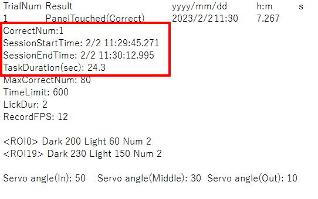
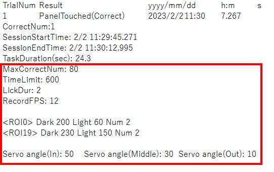
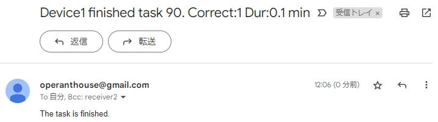
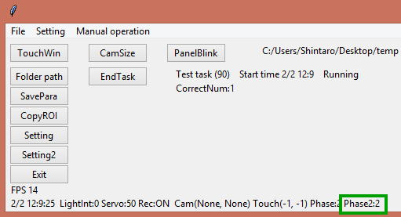

6. About "Phase2"
Code in phase 2 is executed during the task. Phase 2 is also started with initialization.
=================================================================================================================
if Phase2_Init == 0: # Initialization of the task
PutEndTaskNowButton() # Put "TaskEnd" button on Main window
mStatusVar.set('Test task (' + str(GetTaskID()) + ') Start time ' + str(TaskStartedMonth) + '/' + str(TaskStartedDay) + ' ' + str(TaskStartedHour) + ':' + str(TaskStartedMinute) + ' Running') # Substitute latest information about current task into "mStatusVar"
mOngoingResult = ttk.Label(MainWindowRightFrame, textvariable=mOngoingResultVar)
mOngoingResult.place(x=10, y=18)
# Assign task parameter values in StringVars into integer or string variable (to make the cord easeir to read)
MaxCorrectNum=int(MaxCorrectNumVar.get()) # Get the value of "MaxCorrectNumVar" and convert it from string to integerand assign into variable named "MaxCorrectNum"
TimeLimit = int(TimeLimitVar.get())
LickDur = int(LickDurVar.get())
# Declar local variables for this task
CorrectNum = 0
TaskDur = 0 # This will keep the elapsed time during of task
NowDrinking = 0
StartRecording() # Start camera capture / TTL signal output
StartLickRecording() # Start an entry of lick log
LightCycleControlOff() # Deactivate automatic Light/Dark cycle illumination
RoofLightOff() # Turn off the lights on roof (Digital output Ch13)
InfraredLightOn() # Turn on the infrared LED illumination (Digital output Ch12)
DigitalOutOn(10) # Turn on cue LED connected to Ch10
ServoPosInside(3) # Change the angle of water arm servo connected to Ch3 to inside position
CreateNormalPanel(0) # Create a white-filled square panel as panel #0
Writer_TouchEventTxt = open(Path + "/" + str(TimeNow.year) + "_" + str(TimeNow.month) + "_" + str(TimeNow.day) + " " + str(TimeNow.hour) + "h" + str(TimeNow.minute) + "m Task" + str(GetTaskID()) + " Touch.txt", 'w') # Initialize the text exporter for a resultfile
Writer_TouchEventTxt.write('TrialNum\tResult\t\t\tyyyy/mm/dd\th:m\ts\n') # Write item name on the result file
Writer_TouchEventCsv = open(Path + "/" + str(TimeNow.year) + "_" + str(TimeNow.month) + "_" + str(TimeNow.day) + " " + str(TimeNow.hour) + "h" + str(TimeNow.minute) + "m Task" + str(GetTaskID()) + " Touch.csv", 'w')
print("Task #" + str(GetTaskID()) + " is started at " + str(GetTaskStartedMonth()) + '/' + str(GetTaskStartedDay()) + ' ' + str(GetTaskStartedHour()) + ':' + str(GetTaskStartedMinute()) + ':' + str(GetTaskStartedSecond())) # Enter the start time in the consolewindow of Pycharm
Timer_Start(5) # Start a timer #5 to measure the duration of the task
Phase2 = 2 # Start task from the reward phase
Phase2_Init = 1 # Flag indicating that initialization of Phase2 has done
=================================================================================================================
PutEndTaskNowButton()places “TaskEnd” button on the main window andmStatusVar.set()command updates the message shown in themain window.
mOngoingResult = ttk.Label(MainWindowRightFrame, textvariable=mOngoingResultVar)
mOngoingResult.place(x=10, y=18)
These lines place a label which shows the text holded in mOngoingResultVar in the main window.
MaxCorrectNum=int(MaxCorrectNumVar.get()) # Get the value of "MaxCorrectNumVar" and convert it from string to integer and assigninto variable named "MaxCorrectNum"
TimeLimit = int(TimeLimitVar.get())
LickDur = int(LickDurVar.get())
A code include a lot of IntVar is difficult to read so values of IntVars for task parameters are assigned to normal int type variables here.
CorrectNum = 0
TaskDur = 0 # This will keep the elapsed time during of task
NowDrinking = 0
The variables for the task execution are declared here.
In the following code initializes task operation. To stimulate the mouse, the task starts from reward phase.
StartRecording()
Starts camera capturing.
StartLickRecording()
Starts lick logging.
LightCycleControlOff()
RoofLightOff()
To perform the task in dark condition, automatic switching of roof illumination is deactivated and then turn off the ceiling lights.
InfraredLightOn()
Turn on the IR illumination
DigitalOutOn(10)
Activate digital I/O Ch10 to illuminate the cue LED.
ServoPosInside(3)
Water nozzle is moved into the chamber.
CreateNormalPanel(0)
Panel #0 is created here. Once the panel is created you can show and hide it withShowPanel(0)andHidePanel(0).
Writer_TouchEventTxt = open(Path + "/" + str(TimeNow.year) + "_" + str(TimeNow.month) + "_" + str(TimeNow.day) + " " + str(TimeNow.hour) + "h" + str(TimeNow.minute) + "m Task" + str(GetTaskID()) + " Touch.txt", 'w') # Initialize the text exporter for a result file
This code creates a writer to make a text result file. The first argument is a file name. The ‘w’ in the second argument sets this writer tobe a writing mode.
Writer_TouchEventTxt.write('TrialNum\tResult\t\t\tyyyy/mm/dd\th:m\ts\n') # Write item name on the result file
Item names are written in the first line of the text result file. “\t” means comma.
Writer_TouchEventCsv = open(Path + "/" + str(TimeNow.year) + "_" + str(TimeNow.month) + "_" + str(TimeNow.day) + " " + str(TimeNow.hour) + "h" + str(TimeNow.minute) + "m Task" + str(GetTaskID()) + " Touch.csv", 'w')
Result file in CSV format (each value is separated with comma) is also generated in the same way.
Then timer #5 is started by Timer_Start(5). This timer is used for the time limitation of the task. OperantHouse has total 8 timers (#0-7) and each timer can reset and start with Timer_Start(timer#) and get the elapsed time in second with Timer_GetSec(timer#)and stop it with Timer_End(timer#).
Lastly, Set the Phase2 to “2” to switch that the current phase is a reward phase. Phase2 variable holds the transition status within trials. e.g. If Phase2==0, the phase is an initialization of the trial. If Phase2==1, panel touch phase. If Phase2==2, reward phase. If Phase2=-1, it goes to the task finish phase.
==========================================================================================
if Phase2 == 0: # Initiation of new trial
TaskDur = Timer_GetSec(5)
ShowPanel(0) # Display panel #0
Phase2 = 1
==========================================================================================
Phase2 == 0 is a trial initialization phase. In this phase, elapsed time in this session is updated and the panel #0 is displayed.
==========================================================================================
if Phase2 == 1: # Panel presentation
TouchedPanelID = DetectRoiNosepoke() # Examine which panel is touched (return panel ID. If none of the panels touched,return -1)
if TouchedPanelID == 0: # If mouse touches the panel
ServoPosInside(3) # Move the water nozzle into inside position
DigitalOutOn(10) # Onset cue light
HidePanel(0)
NowDrinking = 0
CorrectNum += 1 # Increase the number of correct response
mOngoingResultVar.set('CorrectNum:' + str(CorrectNum))
Writer_TouchEventTxt.write(str(CorrectNum)+'\tPanelTouched(Correct)\t'+ str(TimeNow.year)+"/"+str(TimeNow.month)+"/"+str(TimeNow.day)+"\t"+str(TimeNow.hour)+":"+str(TimeNow.minute)+"\t"+str(TimeNow.second)+"."+str(TimeNow.microsecond//1000)+"\n") # Write the response on the text file
Writer_TouchEventCsv.write(str(CorrectNum) + ',1,' + str(TimeNow.year) + "," + str(TimeNow.month) + "," + str(TimeNow.day)+ "," + str(TimeNow.hour) + "," + str(TimeNow.minute) + "," + str(TimeNow.second) + "." + str(TimeNow.microsecond//1000)+"\n") #Write the response on the csv file
Phase2 = 2 # Start reward phase
==========================================================================================
Phase2 == 1 is a Panel touch phase. In this phase the program keeps checking whether the panel #0 is touched or not. DetectRoiNosepoke() returns the touched panel number so if it returns “1”, that means panel #0 is touched. Otherwise it returns “-1”. After the touch detection, it moves the water nozzle inside to allow water access with cue light and hides the panel. It updates the current result message with mOngoingResultVar.set() and updates the result texts with Writer_TouchEventTxt.write() and Writer_TouchEventCsv.write(). Then it moves to the reward phase (Phase2 == 2).
==========================================================================================
if Timer_GetSec(5) >= TimeLimit * 60: # If time limit of the task comes
TaskDur = Timer_GetSec(5)
print("Time limit elapsed")
Timer_End(5) # Stop the timer
Phase2 = -1
==========================================================================================
DuringPhase2 == 1, it also checks whether the time limit is exceeded or not. If it does, the phase moves to the task end phase.
==========================================================================================
if Phase2 == 2: # Reward phase
if DetectRoiNosepoke() == 19 and NowDrinking == 0: # If the mouse initiates nose poking
NowDrinking = 1
Timer_Start(0) # Start lick timer
if NowDrinking == 1: # If the nose poke has begun
if Timer_GetSec(0) >= LickDur: # If the nosepoke duration exceeds the lick duration
Timer_End(0) # End timer for measuring lick duration
ServoPosMiddle(3) # Move water nozzle back to the middle position
DigitalOutOff(10) # Turn off the cue LED
NowDrinking = 0
if CorrectNum < MaxCorrectNum: # If the touch number doesn't exceed the maximum number
Phase2 = 0
if CorrectNum >= MaxCorrectNum: # If the touch number exceeds the maximum number
TaskDur = Timer_GetSec(5) # Keep the task time
Phase2 = -1 # Go to the task finalizing phase
==========================================================================================
In the reward phase (Phase2 == 2), the water nozzle is moved out of the chamber a certain time (2 sec in default) after the nose poke to the water slit is detected.
In the first part, it keeps checking if the mouse is detected in the ROI near the water slit using DetectRoiNosepoke(). After the detection, the timer #0 is started to measure lick duration and goes to the next part. In the next part, it keeps watching timer #0 with Timer_GetSec(0) if the time elapsed exceeds the lick duration and if it does, the nozzle is retracted with ServoPosMiddle(3) and cue LED is turned off with DigitalOutOff(10). The touch number (=CorrectNum) is checked if it exceeds the touch number limit (MaxCorrectNum) and if it doesn’t, it goes back to the next trial. If it reaches the maximum number of touches, the total task duration is updated and it goes to the session end phase.
==========================================================================================
if Phase2 == -1 or GetEndTaskNowButtonStat() == 1: # If the flag is set to finish the task
LightCycleControlOn() # Activate automatic light/dark cycle
ServoPosMiddle(3) # Moze servo nozzle into middle position
DeleteAllPanel() # Remove a panel on touch screen
InfraredLightOff() # Turn off the infrared LED
if GetRecordingStat() == 1: # If camera is capturing
SetEndRecordingTimer(60) # Onset a timer to finish video recording after 60 frames (correspond about 2sec) from now
# Add summary of results into the result file
Writer_TouchEventTxt.write('CorrectNum:'+str(CorrectNum)+"\n")
Writer_TouchEventTxt.write('SessionStartTime: ' + str(GetTaskStartedMonth()) + '/' + str(GetTaskStartedDay()) + ' ' + str(GetTaskStartedHour()) + ':' + str(GetTaskStartedMinute()) + ':' + str(GetTaskStartedSecond()) + "\n")
Writer_TouchEventTxt.write('SessionEndTime: ' + str(TimeNow.month) + '/' + str(TimeNow.day) + ' ' + str(TimeNow.hour) + ':' +str(TimeNow.minute) + ':' + str(TimeNow.second + (TimeNow.microsecond // 1000) / 1000) + "\n")
Writer_TouchEventTxt.write('TaskDuration(sec): ' + str(TaskDur) + "\n")
# Add experimental conditions into the result file
Writer_TouchEventTxt.write('MaxCorrectNum: '+str(MaxCorrectNum)+"\n")
Writer_TouchEventTxt.write('TimeLimit: ' + str(TimeLimit) + "\n")
Writer_TouchEventTxt.write('LickDur: ' + str(LickDur)+"\n")
Writer_TouchEventTxt.write('RecordFPS: ' + str(GetRecordFps()) + "\n") # Recorded frame number per second
Writer_TouchEventTxt.write(GetRoiSensitivity() + "\n") # Settings of each ROI
Writer_TouchEventTxt.write(GetServoAngle() + "\n") # Set angles of each servo
Writer_TouchEventTxt.close() # Close the text exporter for the result file
Writer_TouchEventCsv.close()
EndLickRecording() # End lick log recording
SendMail(DeviceNameVar.get()+' finished task '+str(GetTaskID())+'. Correct:'+str(CorrectNum)+' Dur:'+str(round(Timer_GetSec(5) / 60,1))+' min','The task is finished.') # Send a email (correct number and task duration are added to email title)
Phase = 1 # Go back to the task-waiting phase
Phase2 = 0
Phase2_Init = 0
==========================================================================================
In the task end phase (Phase2 == -1), the OperantHouse is returned to the standby state and results of the task and experimentalconditions are exported as text files and email is sent.
if GetRecordingStat() == 1: # If camera is capturing
SetEndRecordingTimer(60) # Onset a timer to finish video recording after 60 frames (correspond about 2sec) from now
After checking if the camera capturing is in progress withGetRecordingStat()(it returns “1” if the camera is capturing), the recording isset to end after 60 frames usingSetEndRecordingTimer(60)(This delay is necessary to check back later if the nozzle is actually retractedat the end of session).
The following lines add the summary of the task results as shown below (“\n” is a line break).

The following are task conditions.

Then it finalizes the text export by Writer_TouchEventTxt.close() and Writer_TouchEventCsv.close().
After stopping lick logging, it sends an email withSendMail(“title” , “body text”)(The first argument is the title and the second one is thebody text of the e-mail).

SetDispVariable(0, 'Phase2', str(Phase2))
The last line is a command to display the values of the variables in the lower right corner of the main window.

It should be better to show an example than explaining to understand how it works.
If you command like this,
SetDispVariable(0, 'Color', Red)
SetDispVariable(2, 'Texture', Rough)
SetDispVariable(1, 'Size', 1m)
The following message will appear,
Color:Red Size:1m Texture:Rough
The first argument must be an integer from 0-9.
I guess you probably won't be able to understand the code just by reading. Please try to modify the code yourself and see how it changes the behavior of the device. In the next chapter, I will explain how to create a more complex task by modifying the task 90.